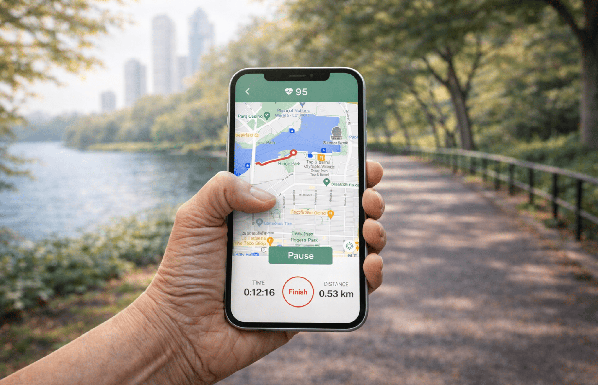
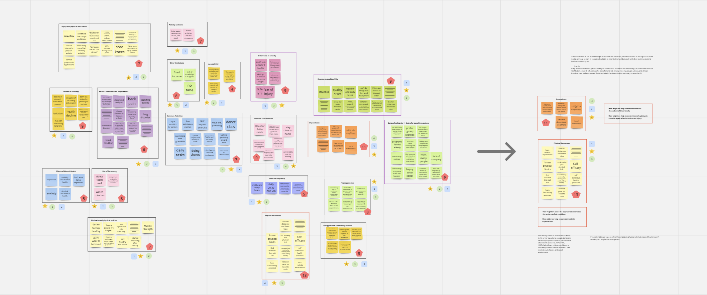
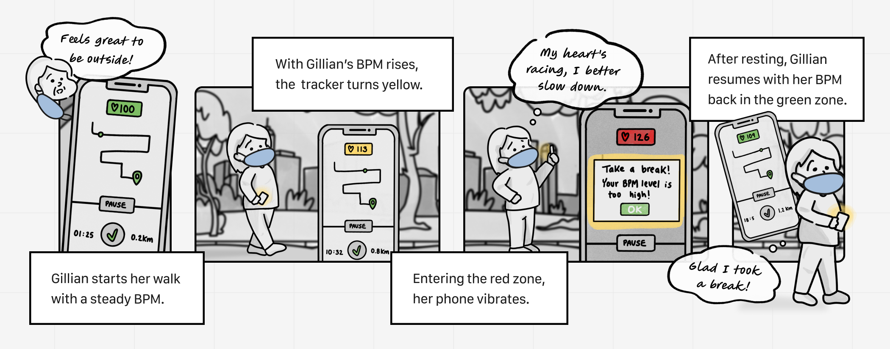
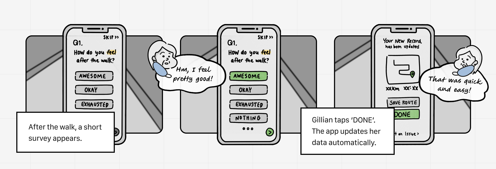
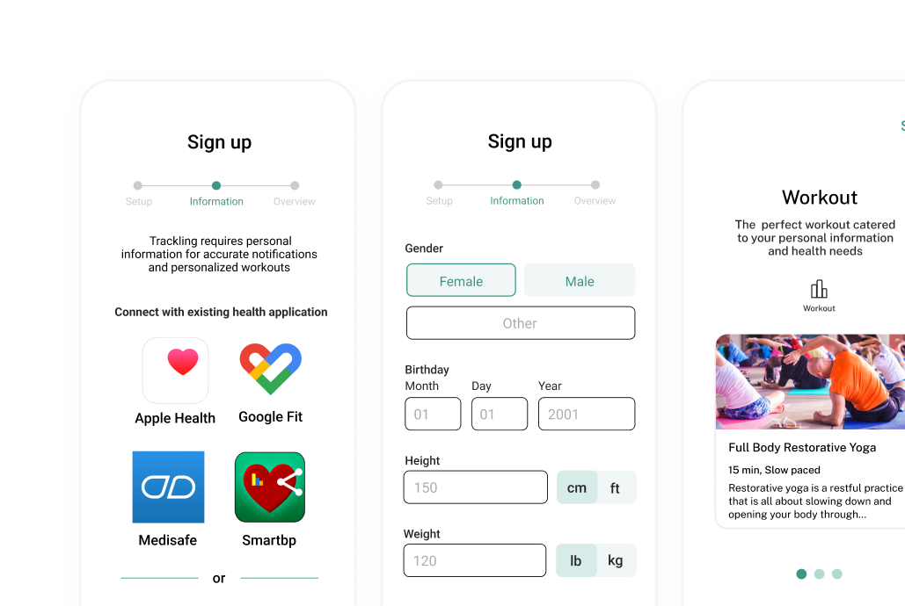
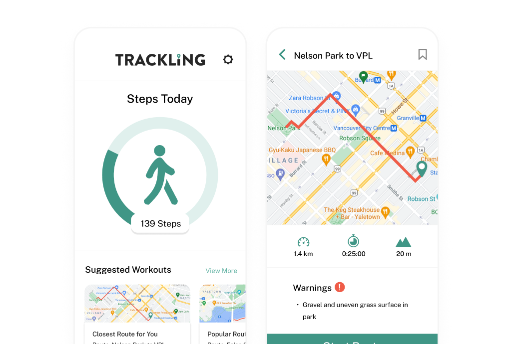
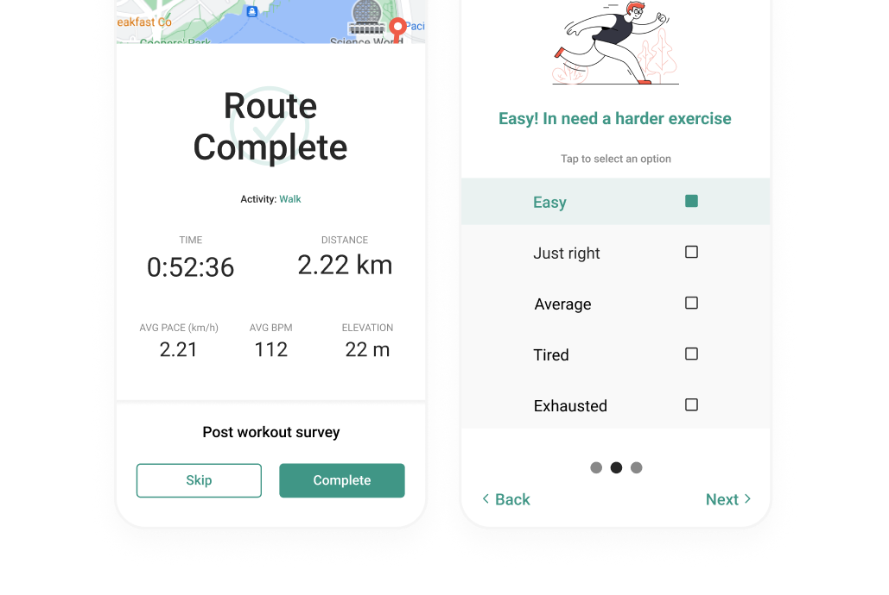

Trackling: Staying Confident and Healthy

Explore the final interactive prototype, and UX research proposal.
PROBLEM
43% of older adults perceived declining physical fitness during the pandemic.
During COVID-19, our team began exploring how technology could support people living in restricted environments. As we examined different user groups, one stood out: seniors, many of whom suddenly lost access to the routines and support systems they relied on.
This led us to ask: how might we support seniors in maintaining healthy routines independently during times of isolation?
SOLUTION
A fitness app that helps seniors exercise safely and independently through real-time health tracking.

Introducing Trackling
Onboarding
Creates a personalized start by importing existing health data or guiding users through a simple manual setup.
Home & Navigation
The home page highlights daily steps and personalized activity insights, with bottom navigation to workouts, routes, tracking, and progress.
Live Tracking & Routes
Heart-rate tracking alerts users when exertion becomes unsafe, while nearby routes tailored to their abilities help plan safer walks.
Heart-rate zones based on American Heart Association: green (safe), yellow (caution), red (recover).
Post-Activity Check-In
A brief check-in helps Trackling adapt future routes and workouts to each user’s needs.
RESEARCH
How our process started
To design, we first had to understand our audience, older adults aged 72+ whose daily routines and social exercise habits were heavily disrupted during COVID-19.
KEY FINDINGS
Through exploratory research, three user interviews, and synthesis on Miro, four insights emerged:

COMPETITOR ANALYSIS
Because walking is one of the safest forms of exercise for seniors, we analyzed three popular fitness apps to see how well they support older adults. While these apps track performance well, none are designed with seniors in mind.
| MapMyWalk | MyFitnessPal | Strava | |
|---|---|---|---|
| Activity tracking | ✓ | ✓ | ✓ |
| Designed for older adults | ✗ | ✗ | ✗ |
| Route preview | ✗ | ✗ | Partial |
| Real-time limit alerts | Premium | ✗ | Premium |
| Heart rate monitoring | Premium | ✗ | Premium |
| Adaptive recommendations | ✗ | ✗ | ✗ |
OPPORTUNITY
Seniors weren't inactive because they didn't want to move — they were afraid. Our opportunity was to rebuild confidence by helping seniors understand their physical limits and exercise safely on their own.
IDEATION
Translating insights into early concepts
Based on our research, we explored three concepts to help seniors assess safety before activity, monitor exertion during exercise, and personalize future support based on user feedback.
Concept 1 – Pre-Walk Route Awareness
Helps seniors evaluate route difficulty and potential hazards before starting a walk.

Concept 2 – Live BPM Monitoring
Provides real-time heart rate feedback to prevent overexertion during exercise.

Concept 3 – Post-Activity Check-In
Collects feedback after exercise to adapt future workouts to the user’s abilities.

DESIGN & TESTING
Iterating toward the final design
Early concepts were developed into low-fidelity prototypes and evaluated through think-aloud usability testing with two seniors. Insights from testing guided refinements focused on accessibility, clarity, and ease of use.






REFLECTION
Design Takeaways
This project was my first experience designing with real user research and complex health data for an audience I didn’t personally relate to. While accessibility principles were always considered, seeing real users struggle made their importance immediate and reshaped how I approach inclusive design.
If I were to revisit this project, I would prioritize earlier testing. Due to COVID, we were limited to two participants, which constrained how much we could validate and refine. With more time, I would explore health data systems to better translate complex information into simpler, intuitive interactions for seniors, while integrating the product into their daily routines to support long-term confidence in staying active.